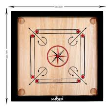
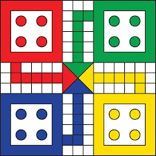
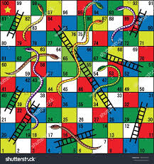
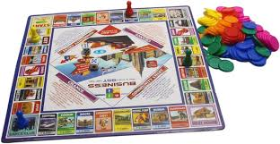

Outdoor Games
we insereted this images from google it means it carry full URL so it is absolute path
HockeyHockey is a term used to denote a family of various types of both summer and winter team sports which originated on either an outdoor field, sheet of ice, or dry floor such as in a gymnasium. While these sports vary in specific rules, numbers of players, apparel, and playing surface, they share broad characteristics of two opposing teams using a stick to propel a ball or disk into a goal.

Volleyball
Volleyball is a team sport in which two teams of six players are separated by a net. Each team tries to score points by grounding a ball on the other team's court under organized rules.[1] It has been a part of the official program of the Summer Olympic Games since Tokyo 1964. Beach volleyball was introduced to the programme at the Atlanta 1996 Summer Olympics. The adapted version of volleyball at the Summer Paralympic Games is sitting volleyball.
Kabaddi
Kabaddi (/kəˈbædi/,[2] /ˈkʌbədi/)[3] is a contact team sport played between two teams of seven players, originating in ancient India.[4] The objective of the game is for a single player on offence, referred to as a "raider", to run into the opposing team's half of the court, touch out as many of their players as possible, and return to their own half of the court, all without being tackled by the defenders in 30 seconds. Points are scored for each player tagged by the raider, while the opposing team earns a point for stopping the raider. Players are taken out of the game if they are touched or tackled, but return to the game after each point scored by their team from a tag or tackle.

Toggle the table of contents Cricket
Cricket is a bat-and-ball game that is played between two teams of eleven players on a field, at the centre of which is a 22-yard (20-metre) pitch with a wicket at each end, each comprising two bails balanced on three stumps. Two players from the batting team (the striker and nonstriker) stand in front of either wicket holding bats, with one player from the fielding team (the bowler) bowling the ball towards the striker's wicket from the opposite end of the pitch. The striker's goal is to hit the bowled ball with the bat and then switch places with the nonstriker, with the batting team scoring one run for each exchange. Runs are also scored when the ball reaches or crosses the boundary of the field or when the ball is bowled illegally.
Indoor Games
Caroom BoardCarrom is a tabletop game of Indian origin in which players flick discs, attempting to knock them to the corners of the board. In South Asia, many clubs and cafés hold regular tournaments. Carrom is commonly played by families, including children, and at social functions. Different standards and rules exist in different areas
Ludo game
Special areas of the Ludo board are typically coloured bright yellow, green, red, and blue. Each player is assigned a colour and has four tokens[c] in their colour. The board is normally square with a cross-shaped playspace, with each arm of the cross having three columns of squares, usually six per column. The middle columns usually have five squares coloured; these represent a player's home column. A sixth coloured square not on the home column is a player's starting square. At the centre of the board is a large finishing square, often composed of coloured triangles atop the players' home columns (thus depicting "arrows" pointing to the finish).
Snakes and ladders
Snakes and ladders is a board game for two or more players regarded today as a worldwide classic.[1] The game originated in ancient India as Moksha Patam, and was brought to the United Kingdom in the 1890s. It is played on a game board with numbered, gridded squares. A number of "ladders" and "snakes" are pictured on the board, each connecting two specific board squares. The object of the game is to navigate one's game piece, according to die rolls, from the start (bottom square) to the finish (top square), helped by climbing ladders but hindered by falling down snakes.
Business game
Business game (also called business simulation game) refers to simulation games that are used as an educational tool for teaching business. Business games may be carried out for various business training such as: general management, finance, organizational behavior, human resources, etc. Often, the term "business simulation" is used with the same meaning.
